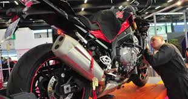
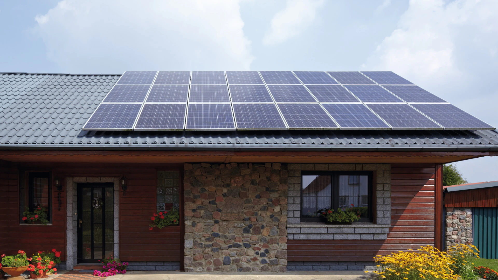

Bienvenue au Centre de Formation Professionnelle de Yangasso
Le Centre de Formation Professionnelle de Yangasso est un établissement d'excellence dédié à la formation de techniciens qualifiés dans des domaines cruciaux pour le développement de notre région.
Fondé en 2015, notre centre offre des formations pratiques et théoriques de haute qualité, adaptées aux besoins du marché du travail local et national. Nous nous engageons à fournir à nos étudiants les compétences nécessaires pour réussir dans leur carrière et contribuer au progrès de notre communauté.
Nos installations modernes, nos formateurs expérimentés et nos partenariats avec des entreprises locales font du CFP Yangasso un choix idéal pour les jeunes aspirant à une carrière technique prometteuse.
Découvrez nos filières spécialisées et rejoignez-nous pour construire ensemble un avenir brillant !
Mot du Directeur Général
Chers visiteurs, élèves potentiels et partenaires,
C'est avec un grand plaisir que je vous souhaite la bienvenue au Centre de Formation Professionnelle de Yangasso. Notre mission est de former les talents de demain, en offrant une éducation de qualité axée sur les compétences pratiques et les besoins du marché du travail.
Au CFP Yangasso, nous croyons en l'importance de l'innovation, de la persévérance et de l'excellence. Nos programmes en mécanique, électronique et électricité photovoltaïque sont conçus pour vous donner les outils nécessaires pour réussir dans un monde en constante évolution.
Je vous invite à explorer notre site, à découvrir nos filières et à nous rejoindre dans cette aventure passionnante qu'est l'apprentissage d'un métier. Ensemble, construisons un avenir brillant pour vous et pour notre communauté.
- Niassian A. TINA, Directeur du CFP Yangasso
Nos Filières
Mécanique des engins à 2 roues
Notre formation en mécanique des engins à 2 roues vous prépare à devenir un expert dans la réparation et l'entretien des motos et scooters. Vous apprendrez les techniques de diagnostic, la réparation des moteurs, des systèmes de transmission et des composants électriques. Cette filière répond à une forte demande dans notre région où les deux-roues sont très populaires.
Électronique
La filière électronique vous forme aux technologies modernes utilisées dans les appareils électroniques. Vous étudierez les circuits imprimés, les microcontrôleurs, et les systèmes de communication. Cette formation vous permettra de travailler dans divers domaines tels que la maintenance d'équipements électroniques, la conception de circuits, ou l'installation de systèmes de sécurité.
Électricité Photovoltaïque
Notre formation en électricité photovoltaïque vous prépare à l'installation et à la maintenance de systèmes solaires. Vous apprendrez à dimensionner, installer et entretenir des panneaux solaires et leurs composants associés. Cette filière est particulièrement pertinente dans notre région ensoleillée et répond aux besoins croissants en énergie renouvelable et en électrification rurale.
Informations d'Inscription
L'inscription au Centre de Formation Professionnelle de Yangasso est ouverte à tous les jeunes désireux d'acquérir des compétences pratiques dans nos domaines de spécialisation. Notre processus d'admission est conçu pour être accessible et équitable.
Pour vous inscrire, veuillez vous présenter à notre secrétariat avec les documents suivants :
- Une copie de votre carte d'identité ou extrait de naissance
- Votre dernier diplôme ou certificat d'études
- Trois photos d'identité récentes
- Un certificat de résidence
- Les frais d'inscription (montant à confirmer auprès du secrétariat)
Les inscriptions sont ouvertes du 1er juillet au 30 septembre de chaque année. Les cours débutent généralement en octobre. Pour plus d'informations, n'hésitez pas à nous contacter ou à vous rendre directement dans nos locaux.

Contactez-nous
Coordonnées
Adresse : 123 Rue de la Formation, Yangasso, Mali
Téléphone : +223 76 16 20 38
Email : contact@cfpyangasso.ml